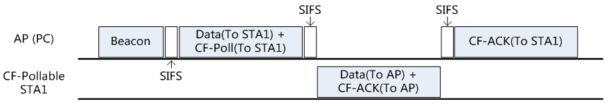

802.11协议精读4：PCF工作模式
序言
在前面我们叙述过，在802.11的MAC层中，分成了两种基本工作模式：
- DCF（Distributed Coordination Function）
- PCF（Point Coordination Function）
我们已经介绍过了DCF的工作模式，而PCF模式当前只有协议中进行了规范，而在实际产品中几乎很少见到。所以就像在 802.11 权威指南和 CWNA 书本中所述一样，对于PCF的机制仅仅是协议规定，而几乎没有产品，所以纯粹对协议希望有深入了解的话，那么才需要对此进行阅读。这里仅仅是将笔者读协议以及相关资料中，所理解的PCF工作模式进行整理。
PCF简介
PCF 的全称是 Point Coordination Function，即点协调工作模式。在 802.11 的MAC层协议结构中，PCF 是基于DCF之上的协议，同样的还包含 EDCA 和 HCCA 两种模式，后两种主要是为了QOS进行设计的，具体如下图
由于 PCF 是以 DCF 作为基础扩展的，所以 PCF 与 DCF 是可以兼容工作的。在 PCF 模式中，两者的兼容实际上是基于一种交替工作的机制，即 PCF 和 DCF 各占据一段时间，交替进行工作。该交替周期即是 CFP 重复周期（CFP repetition interval），在该周期内，包含CFP和CP两个部分，如下图
-
无竞争时间（CFP）：Contention-Free Period，即CFP时间是为了PCF工作所设定的一段时间。该时间是利用虚拟载波监听（NAV）的机制进行保护的，该NAV是由Beacon帧进行设置，并由 CF-END帧 用来终止。 -
竞争时间（CP）：Contention Period，该CP时间是用来给 DCF 工作的一段时间，在该周期内，协议按照DCF的模式进行工作。
这里我们还需要更细一些说明该 CFP 时间 设置的原理。在之前描述DCF模式中，我们基本已经描述了NAV的工作机制，其主要是利用无线数据帧MAC 头部中的 Duration 字段进行设置。在CFP准备启动的时刻，AP首先利用 beacon 帧设置 NAV 时间至CFPMaxDuration，其具体设置方案如下：
- 利用数据帧的 MAC 头部中的 Duration 字段，设置
CFPMaxDuration。标准的Duartion字段共有16个字节[0:15]，其中倒数2个字节，即[14:15]是标志位，且其存放方式应该是属于小端模式的，即后面的是高位，前面的是低位。如果是CFP设置NAV时，对应第14位置0,第15位置1，其余各位都是0。故解析出来，那么NAV的时间即设置为 \(2^{15}=32768 \, microsecond\)。其对应结构如下图：
- 除了利用 MAC 头部的 Duration 字段，在 CFP 对应的 beacon 帧中，还有一个
CF Parameter Set字段。利用该字段中的CFP MaxDuration，也同样设置该参数。在 802.11 中设置两次 CFPMaxDuration 参数的原因在于，是在于避免无法识别CF Parameter Set字段的节点，只要其能识别标准MAC头部的 Duration 字段，那么其也会被置为 NAV 状态，从而无法争夺信道的使用权。
由于这里NAV是被设置为最大时间，所以 NAV 的技术与之前我们描述在 DCF 的 RTS/CTS 模式下存在差别。在 DCF 中的 RTS/CTS 模式下，NAV 是通过倒数置0，从而释放信道。在PCF模式中，NAV的释放是通过 CF-END帧，按照笔者记忆中，中间传递的各个帧中也会重复将 NAV置为最大，只有在最后的 CF-END 中，才会将 duration 字段写成0，从而结束 NAV 时间，换言之，NAV时间的设定是可以被覆盖的。CF-END的帧结构如下：
如上图，CF-END 是一个广播帧，其类型是控制帧，子类型是 CF-END，而且 Duration 部分设置为0，其余该帧内没有什么特殊的地方了。
通过以上的机制，PCF 能够很好的与 DCF 进行兼容。在下面的内容中，我们开始解释 PCF 具体的工作模式。
PCF工作模式
在这一段中，我们叙述PCF的具体工作模式。PCF的主要思想为：
"AP充当中心协调控制器（PC）的角色，根据其内部的轮询表（polling list）依次轮询与之连接的节点（CF-Pollable STA），看其是否有数据待传。在CFP时间内，节点由于NAV机制，故无法主动竞争信道。故除非基站轮询节点，要求其反馈数据，节点不可以主动进行传输动作。"
在上述描述中，已经包含了，在 PCF 中的两个新的角色：
-
PC（point coordinator）：即点协调器，一般情况下，都是由 AP 做点控制器。
-
CF-Pollable STA：支持PCF机制的节点。
在 PC 身上，我们还会引入轮询表（polling list）的概念。在 PCF 中，PC 按照轮询表的顺序，按照升序，依次对节点进行轮询。在免竞争期间，除非基站以轮询帧提出要求，否则工作站不得进行传输数据。轮询具体会采用 CF-POLL 帧来执行，节点接收到 CF-POLL 之后，向PC反馈数据。在标准的 PCF 中，一次 CF-POLL 只会反馈一个数据帧。只有在启用 APSD（Automatic Power Save Delivery）的设计下，才会使用其他的请求方式（Trigger Frame），才会一次请求，反馈多个数据帧，不过这里由于我们没有讨论节能方面的内容，故不展开讨论。
并且在 PCF 中，还会引入多种新的帧结构，比如前面叙述中出现的 CF-END，在 PCF 中还存在其余的各种帧如下：
-
仅PC发送：
-
Data＋CF-Poll
- Data＋CF-ACK＋CF-Poll
- CF-Poll
-
CF-ACK＋CF-Poll
-
PC与CF-Pollable STA发送：
-
Data
- Data＋CF-ACK
- Null
- CF-ACK
接下来，我们还是假设讨论与 DCF 同样的拓扑，并且在该PCF讨论中，我们同时关注上下行流：

由于 PCF 不同种帧类型其功能会有一些不同，为了说明清楚，我们选取几个典型的工作流程，进行具体的示例说明，其余的一些工作流程可以类比得出。
CF-Poll -> Data -> CF-ACK 工作流程
-
首先 AP 发送 Beacon，利用其中的
duration参数，将所有节点设置成 NAV 状态。（PS：在 CFP 时间的设置上，前面我们描述过，也可以利用 beacon 帧中的CF Parameter Set，这里为了描述的方便，所以就不再强调了，还请见谅） -
AP 本地没有发往节点 STA1 的缓存数据，故 AP 直接发送 CF-Poll，让节点可以上传数据。
-
节点发送 DATA 给 AP。
-
最后 AP 反馈 CF-ACK 给节点，从而结束一次传输轮询。
上图是最简单的请求反馈过程，除了首先是由 AP 触发这次传输以外，其余基本和 DCF 的工作是相同的。这里我们还需要注意的是，若 AP 成功接收了 Data，那么其反馈 ACK 信息。若 AP 没有成功接收节点的DATA，那么可能会出现两种情况：
-
STA1 向 AP反馈 DATA 过程中发生错误，从而 DATA 无法通过 CRC 校验。这个情况下，AP 不会反馈 CF-ACK，直接轮询下一个节点 STA2。
-
AP 向 STA1 发送 CF-Poll 帧的过程中发生错误，从而 STA1 根本就不知道 AP 有要求自己反馈上行数据，从而 STA1 是不会主动反馈数据的。在该情况下，AP 会等待 PIFS 时间，若 PIFS 时间内，没有检测到节点存在反馈，那么 AP 就认为这次传输失败，跳过该节点，继续轮询下一个节点，具体如下图：
PIFS 的时间实际上是由一个 SIFS 和一个 SLOT 组成，即 \(PIFS=SIFS+SLOT\)。结合我们在DCF部分论述Slot和SIFS具体组成的内容，这里之所以PIFS这样设计，实际上是利用Slot里面的CCA机制，AP利用该CCA判断是不是存在反馈帧，若存在反馈帧，那么就进行接收。这里并没有采用DCF中的ACK timeout的简单机制来判断是否反馈，而是具体采用这种CCA检测的具体机制，是除了这里反馈CF-ACK以外，还有可能反馈其他类型的帧，比如CF-ACK +CF-Poll等，具体内容我们在后面进行叙述。
DATA+CF-Poll -> Data+CF-ACK -> CF-ACK工作流程
第二种情况较为复杂一些，我们先描述其时序图：

-
首先 AP 发送 Beacon，利用其中的
Duration参数，将所有节点设置成 NAV 状态。 -
AP 本地存在发往节点 STA1 的缓存数据，故 AP 将自己的 DATA 以及 CF-Poll 同时发送，让节点在接收数据后，可以上传数据。
-
节点发送 DATA+CF-ACK 给 AP，其意在首先确认之前AP发送的下行数据，再反馈自身的数据给AP。
-
最后 AP 反馈 CF-ACK 给节点，从而结束一次传输轮询。
我们现在讨论上面工作机制的一些细节内容。
-
首先叙述 AP 缓存节点数据的机制，在 PCF 模式以及节能模式下，缓存机制都会被有效利用起来，这里的缓存是指公网发往节点的信息，由于没有及时传给节点，从而缓存在AP身上。该缓存信息在每一个 beacon 周期内，也会在其
TIM字段内利用Bitmap信息进行标识。Bitmap 是一种映射的数据结构，其中每一个位就代表一个节点，即每一位都是和节点的二层地址进行关联。若该位为 1 时，那么代表该节点存在缓存数据，若为 0，那么对应没有缓存数据。故节点在接收到beacon帧后，就知道在这个周期内，我会不会收到来自与AP的数据。 -
其次我们需要强调的是，这里的
DATA+CF-Poll是一个帧，不是分别的两份帧。这里实际上是对应到一种特殊类型的帧，这里不同帧的类型实际上是通过在 MAC头 部第一个字段 Frame control 下的两个字段：Type 和 SubType 组成的，如下图
我们总结在PCF中，type有关的具体相应参数如下：
Note
CF-ACK 与标准的 ACK 帧不同，标准的 ACK 为控制帧，而 CF-ACK 为数据帧。
- 最后我们需要理解，为什么在 PCF 这里协议选择用一个帧的功能来代替分别传输两个帧，其主要原因就是节省时间，这里不仅仅节约了额外帧交换中需要等待的 SIFS 时间，也减少了单独传输帧所花费的时间。比如说对比 DCF 中执行类似 DATA+CF-Poll 这样的发送流程，其发送大致为 DATA+SIFS+ACK+CF-Poll+SIFS+DATA+ACK 这么长的流程才可以完成，而采用合成帧的形式，那么就简单很多，并且对性能有好的提升。
CF-Poll -> Data -> CF-Poll + CF-ACK -> Data 工作流程
在了解前面的内容之后，我们描述另外一种合成的帧，CF-Poll+CF-ACK帧，还是首先描述其工作流程：
-
首先 AP 发送 Beacon，利用其中的duration参数，将所有节点设置成NAV状态。
-
AP 通过 CF-Poll 请求节点 STA1，让 STA1 可以上传数据。
-
节点 STA1 发送 DATA 给 AP。
-
AP 发送 CF-Poll+CF-ACK，其中 CF-ACK 是发给 STA1 用以确认其发送的数据，CF-Poll 是用来请求下一个节点发送数据，即发给 STA2 用以请求数据。
-
节点 STA2 反馈数据给 AP。之后的工作流程我们这里省略。
大体上和之前的工作模式是类似的，唯一区别的是 CF-Poll+CF-ACK帧，该帧既是发送给 STA 用来做 CF-ACK 确认，又是发送给 STA2 用以请求数据，而我们知道 802.11 帧的目的地址只有一个，所以这里是存在疑惑的，目前还没有在协议中发现具体描述这种帧结构的部分，目前猜想应该是类似 CF-END+CF-ACK 帧的结构：

在无线帧中，ACK 帧是没有源地址，只有目的地址的，这点 ACK 和 CTS 同样。而在上图所示结构中，除了在 ACK 中存在的 RA（Receive address）地址，还存在额外的一个 BSSID 地址。故我们初步猜测是，RA是用来作为ACK反馈的目标地址，在我们所示流程中，即为 STA1 的地址。而用来作为 CF-Poll 请求的目的地址可能是放在 BSSID 这个位置中，标准的 BSSID 是用来表示 AP 相应的地址（即SSID具体对应的 BSSID 地址），但是这里由于目的地是一个节点，故在 CF-Poll+CF-ACK 帧中，这里也许就是放的 Polling 的目的地址。即这里猜想在 CF-Poll+CF-ACK 这个帧中，该处还是一个地址，不过不是 BSSID，而是Polling的目的地址。从而才可以利用一个帧，同时向两个节点传达目的。
CF-END与CF-END+CF-ACK
在 PCF 的无竞争周期最后，是利用 CF-END 帧来作为终止信息的。其中 CF-END 也有两种可能性，即 CF-END 和 CF-END+CF-ACK。同时，由于其可以终止 CFP 时间的特性，故协议中，这两种帧的类型都被定义为控制帧，与其余的PCF帧存在一定的区别。由于在该帧中的 duration 字段设置为 0，并且这是一个广播帧。当所有节点接收到该帧后，修改自己的NAV时间为0，从而即是结束利用虚拟载波监听NAV机制所保护的无竞争时间，转入竞争接入状态。具体该帧结构如下：
其中 Duration 字段为0，RA字段为广播地址，而BSSID字段为 AP 上SSID所对应的 BSSID 地址。CF-END 和 CF-END+CF-ACK帧结构一样。
综上所述，我们阐述了有关PCF工作模式中，具有典型意义的几个工作流程，由于PCF的帧类型总数较多，所以能组合成多种不同的具体工作流程，所以我们就没有完整列举了。其余的情况应该都可以基于以上几个典型的情况进行类比。由于 PCF 的整理还是较为繁杂，所以难免会存在不清楚的地方。以上叙述中，如果有不清楚，或者存在有错误的地方，还请见谅。